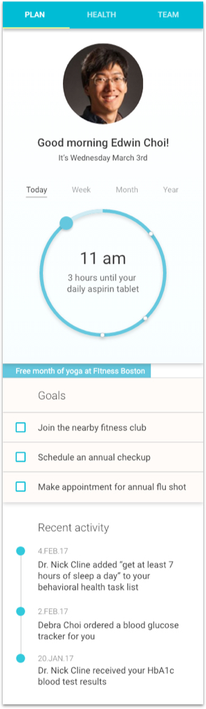
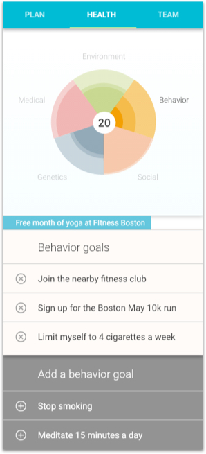

The following are examples of designs and interactions of person-centered care planning based on the care, design, and policy principles. Designs will continually be added over time.
The following design focuses on two primary care planning concepts. One, the ability to have the right information at the right time. To know what actions or steps to take on the plan at any given moment in time. Two, the ability to have open and clear communication between care team members. Being able to have the lines of contact open, as well as being cognizant of how the care team is interacting with the care recipients plan.
Health data is continuous
Incremental repeated data collection on user likes and dislikes, morals and values when it comes to health.
Provide the right data at the right time
The care plan schedule is visually organized on the home screen, and recent care team activities are always viewable so that the care recipient knows how the plan is changing.
Care is person-centered
The care recipient has the ability to view their health in a particular category, as well as have the ability to participate in building their goals and actions that will address those concerns.
Copyright © 2017 GoInvo | Licensed under Apache 2.0